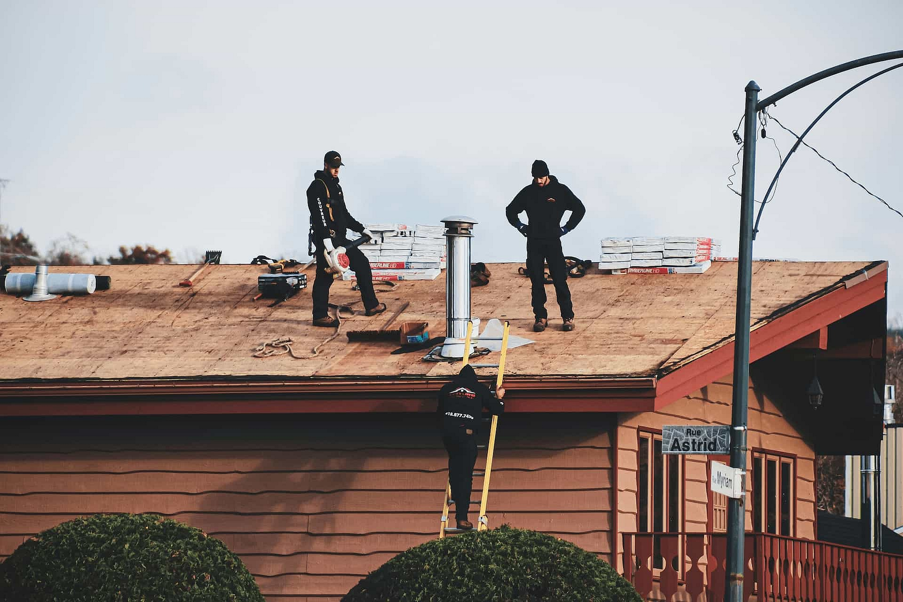

Identify
Start with the issue, goal, or roof condition that best matches your situation.
Explore categories, planning pages, request steps, and legal information.
RTB Roof Atlas turns scattered roofing concerns into clearer request paths — from leak signals and storm impact to inspection-first decisions and broader roof planning.

Useful when the roof looks older, broadly worn, or near end-of-life.
Useful for visible water entry, isolated damage, or smaller issue zones.
Useful after hail, wind, or debris exposure following severe weather.
Useful when the first step is understanding the roof condition.
Useful for scheduled roof system planning or installation-based projects.
Useful when you want to browse all request categories first.
Start with the issue, goal, or roof condition that best matches your situation.
Explore planning notes, request categories, and common use cases.
Share contact details, address, category, and project context through the request form.
Next steps depend on the category selected and independent provider availability.
Instead of generic notes, RTB helps users frame the roof situation through visible clues, urgency, age context, and planning intent.
Stains, lifted shingles, sagging lines, storm marks, and leak timing often say more than generic category guesses.
A planning request and an active leak request should not feel the same in the form flow.
Even an approximate age helps place the request closer to inspection, repair, or replacement logic.
Some users are reacting to damage. Others are planning exterior upgrades, comparing options, or preparing for the next decision step. RTB should reflect that difference clearly.
Move through the main roofing request paths with a continuous carousel that works on desktop and mobile.
RTB is designed for request guidance, category clarity, and planning support.
RTB does not directly perform roofing construction, repair, or installation work.
Next steps, scope, timing, and provider response depend on request details and availability.
No. RTB Roof Atlas is an informational and request-routing platform, not a direct roofing contractor.
Yes. The category and planning pages are designed to help users compare common roofing situations before submitting a request.
No. Final pricing, scheduling, and project scope depend on the independent provider reviewing the request.
No. A submitted request helps with routing and review, but does not guarantee provider acceptance, final scope, or scheduling.
Use the request form to provide contact information, property address, category preference, and any visible roof concerns.